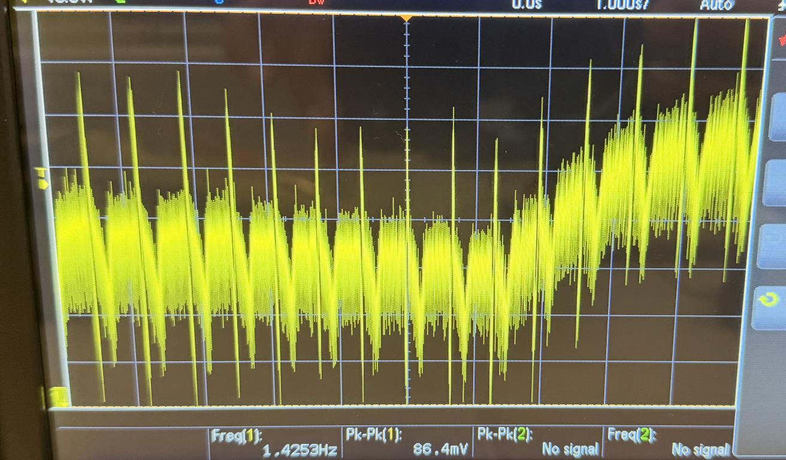
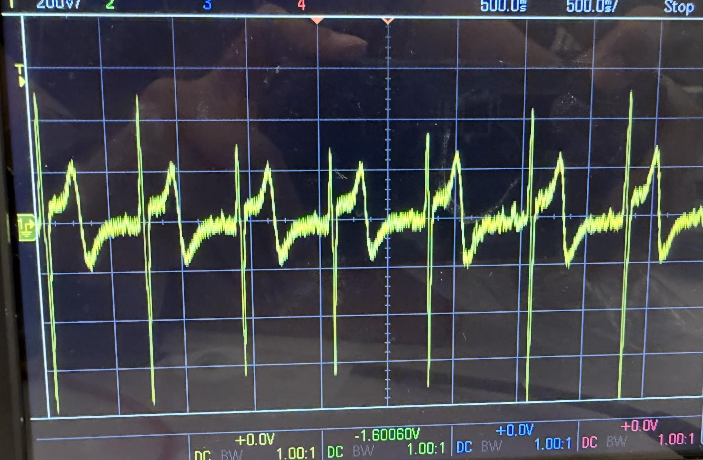
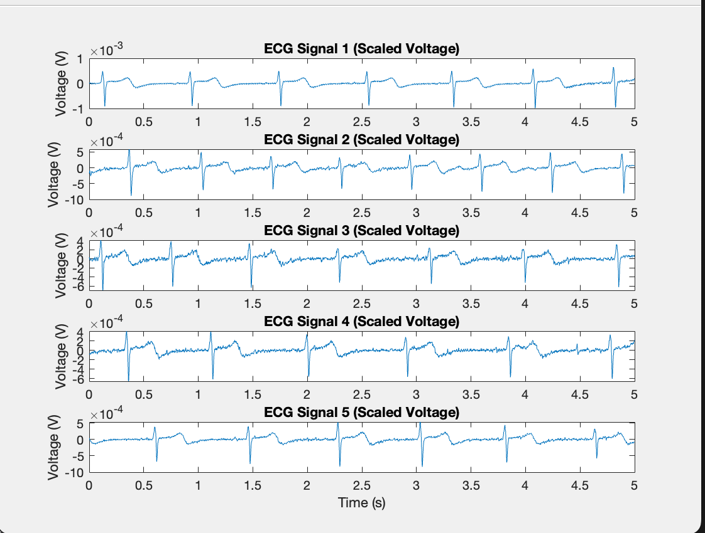
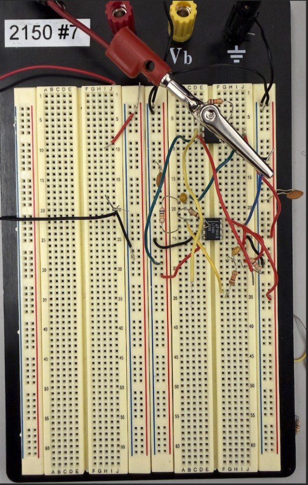

ECG Signal Analysis and Filtering Pipeline
Overview
Acquired and processed raw ECG signals using surface electrodes and analog front-end circuitry with signal conditioning, amplification, and real-time visualization.
Key Components
- Signal Acquisition: Acquired raw ECG signals using surface electrodes and analog front-end circuitry
- Signal Conditioning: Designed and implemented signal conditioning including amplification, band-pass filtering, and noise suppression
- Real-Time Visualization: Captured and visualized ECG waveforms in real-time using oscilloscope and software plots
- Signal Processing: Processed and normalized signals to clearly identify P, QRS, and T complexes
- Validation: Validated signal quality under varying electrode placement and motion conditions
Technical Implementation
This project involved the complete signal processing pipeline from hardware acquisition to software analysis, demonstrating proficiency in analog circuit design, signal processing, and biomedical instrumentation.



